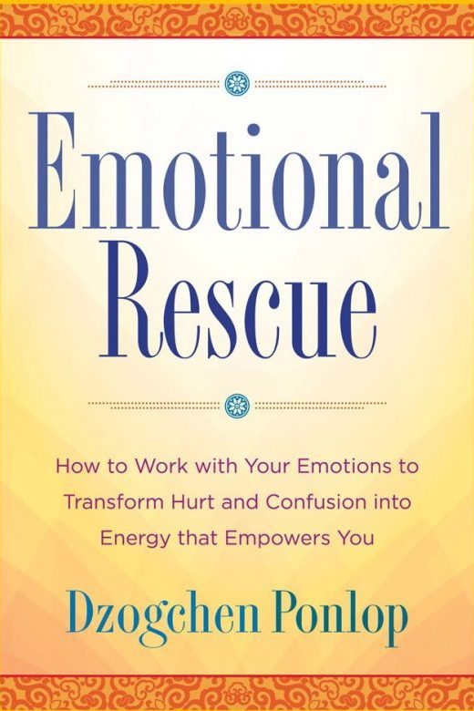

Emotional Rescue: How to Work with Your Emotions to Transform Hurt and Confusion into Energy That Empowers You
How to Work With Your Emotions To Transform Hurt And Confusion Into Energy That Empowers You.
“Ponlop Rinpoche gives us here a down-to-earth guide to recognize, understand, transform, and utilize the basic energy of even our negative emotions to live fresh and genuinely happy…” — Richard Gere
Where to buy →